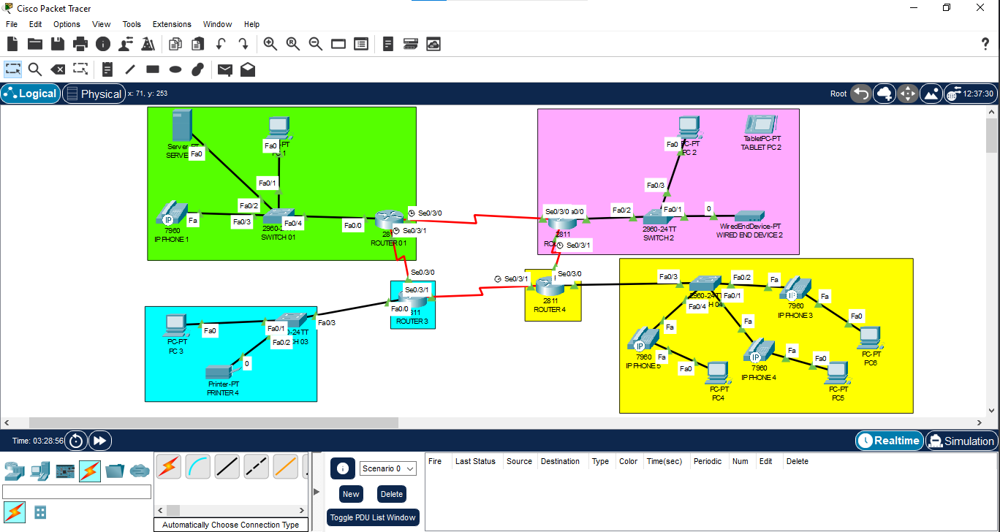
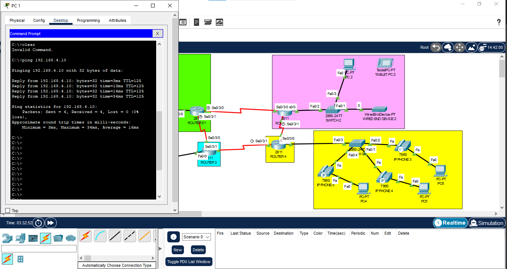
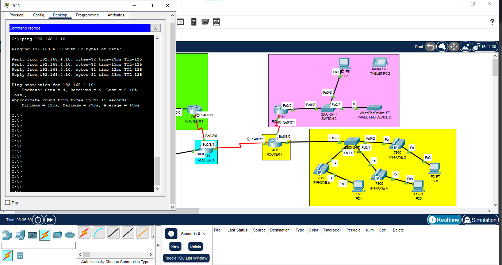

Arquitectura extremo a extremo para la transmisión digital simultánea de voz, datos y señalización, diseño práctico con redundancia en anillo y análisis comparativo frente a la red troncal SS7.
Haz clic en cualquier bloque funcional del diagrama para inspeccionar su rol técnico y su equivalencia directa en la topología implementada en Cisco Packet Tracer.
Canales digitales dúplex de 64 kbps dedicados al transporte de información de usuario (voz digitalizada mediante modulación por impulsos codificados PCM a 64 kbps o tráfico de datos IP encapsulado en PPP/HDLC).
Opera a 16 kbps en acceso BRI y a 64 kbps en acceso PRI. Realiza señalización fuera de banda (separada de los datos) para establecer, supervisar y liberar conexiones mediante los protocolos LAPD (Q.921) en Capa 2 y Q.931 en Capa 3.
RDSI Banda Estrecha (RDSI-BE): Opera sobre pares de cobre con accesos BRI (144 kbps útiles) y PRI (hasta 2.048 Mbps en estándar E1).
RDSI Banda Ancha (RDSI-BA): Evolución sobre fibra óptica y conmutación de celdas ATM para servicios multimedia de alta capacidad.
Para representar una arquitectura RDSI empresarial con alta disponibilidad y redundancia, se diseñó una topología distribuida en 4 sucursales independientes (LAN) interconectadas mediante un anillo WAN punto a punto con cuatro routers Cisco 2811.
HWIC-2T (puertos Serial0/3/0 y Serial0/3/1).clock rate 64000, replicando exactamente la velocidad digital estándar de un Canal B de RDSI (64 kbps) y la temporización provista por la operadora.encapsulation ppp (Point-to-Point Protocol), garantizando transporte digital síncrono punto a punto entre nodos.ROUTER01 ↔ ROUTER02 ↔ ROUTER04 ↔ ROUTER03 ↔ ROUTER01 mediante subredes dedicadas /30 (2 hosts útiles por enlace).Serial0/3/0 entre ROUTER01 y ROUTER02, OSPF converge en segundos y redirige el tráfico por el camino alternativo (ROUTER01 → ROUTER03 → ROUTER04) sin pérdida de comunicación.192.168.1.0/24 con SWITCH 01, servidor (SERVER 1), estación de trabajo (PC 1) y telefonía (IP PHONE 1).192.168.2.0/24 con SWITCH 2, PC 2 y terminal cableado (WIRED END DEVICE 2).192.168.3.0/24 con SWITCH 03, PC 4 e impresora de red (PRINTER 4).192.168.4.0/24 con SWITCH 04 y tres puestos convergentes voz/datos en cascada (IP PHONE 3/4/5 + PC4/PC5/PC6).| Dispositivo | Interfaz LAN (FastEthernet) | Enlaces WAN (Serial HWIC-2T) | Función en la Arquitectura |
|---|---|---|---|
| ROUTER01 Verde | Fa0/0: 192.168.1.1/24 |
Se0/3/0 (DCE 64k): 10.0.12.1/30 → R2Se0/3/1 (DCE 64k): 10.0.13.1/30 → R3
|
Gateway Sede 1 + Generador de reloj sincronización WAN |
| ROUTER02 Rosa | Fa0/0: 192.168.2.1/24 |
Se0/3/0 (DTE): 10.0.12.2/30 → R1Se0/3/1 (DCE 64k): 10.0.24.1/30 → R4
|
Gateway Sede 2 + Nodo de tránsito superior del anillo |
| ROUTER03 Celeste | Fa0/0: 192.168.3.1/24 |
Se0/3/0 (DTE): 10.0.13.2/30 → R1Se0/3/1 (DTE): 10.0.34.2/30 → R4
|
Gateway Sede 3 + Ruta de respaldo inferior del anillo |
| ROUTER04 Amarillo | Fa0/0: 192.168.4.1/24 |
Se0/3/0 (DTE): 10.0.24.2/30 → R2Se0/3/1 (DCE 64k): 10.0.34.1/30 → R3
|
Gateway Sede 4 + Nodo convergente voz/datos en cascada |
Capturas obtenidas directamente del entorno de simulación en Cisco Packet Tracer verificando topología, conectividad ICMP (Ping) y conmutación por redundancia.


PC 1 (192.168.1.10 - Zona Verde) hacia PC4 (192.168.4.10 - Zona Amarilla) atravesando la red WAN encapsulada en PPP.

Serial0/3/0 de ROUTER01, OSPF recalcula la ruta por el tramo inferior (ROUTER03 → ROUTER04) manteniendo la conectividad sin interrupción.
Aunque ambas tecnologías nacieron bajo el marco de las telecomunicaciones digitales de la UIT-T y trabajan de forma complementaria, operan en niveles distintos de la infraestructura telefónica y de datos.
| Dimensión Técnica | RDSI / ISDN (Red Digital de Servicios Integrados) | Red SS7 (Signaling System No. 7 / CCS7) |
|---|---|---|
| Ámbito y Frontera de Red | Red de Acceso (Usuario – Red / UNI): Conecta las instalaciones del abonado (hogares, empresas, routers de borde) con la central local del operador. | Red Troncal / Núcleo (Red – Red / NNI): Interconecta exclusivamente las centrales telefónicas y nodos internos dentro de la infraestructura del operador. |
| Objetivo Principal | Proveer al usuario final un acceso digital integrado capaz de transportar voz, datos y vídeo simultáneamente sobre el bucle local. | Controlar el establecimiento, enrutamiento, supervisión, tarificación y liberación de llamadas entre múltiples centrales de conmutación. |
| Arquitectura y Elementos | Terminales TE1 / TE2, Adaptador TA, Terminaciones de Red NT1 / NT2 y puntos de referencia R, S, T, U. |
SSP (Service Switching Point - Centrales), STP (Signal Transfer Point - Enrutadores de señalización) y SCP (Service Control Point - Bases de datos). |
| Mecanismo de Señalización | Señalización fuera de banda a través del Canal D (16 o 64 kbps) usando los protocolos LAPD (Q.921) y DSS1 (Q.931). | Señalización por canal común totalmente independiente de los troncales de voz (64 kbps o enlaces de alta velocidad) mediante MTP, SCCP, ISUP y TCAP. |
| Transporte de Datos de Usuario | Sí: Transporta tanto la señalización (Canal D) como la carga útil de voz/datos del usuario (Canales B de 64 kbps). | No: Solo transporta mensajes de control y señalización; la voz o datos viajan por circuitos troncales separados (E1/T1 o fibra). |
| Redundancia y Alta Disponibilidad | Se logra mediante enlaces múltiples (PRI), canales B de respaldo bajo demanda o topologías en anillo con enrutamiento dinámico (como el diseño OSPF implementado). | Arquitectura nativa altamente redundante con pares de nodos STP duplicados y enlaces cruzados (A, B, C, D) que garantizan disponibilidad del 99.999 %. |
| Interacción en una Llamada Real |
Cuando un equipo RDSI inicia una comunicación, envía un mensaje SETUP (Q.931) por su Canal D hasta la central local. Allí, la central traduce esa solicitud al protocolo ISUP de SS7 (mensaje IAM) y la enruta a través de los nodos STP/SSP de la red troncal SS7 hasta alcanzar la central de destino, la cual vuelve a entregarla al usuario receptor mediante otro acceso RDSI.
|
|